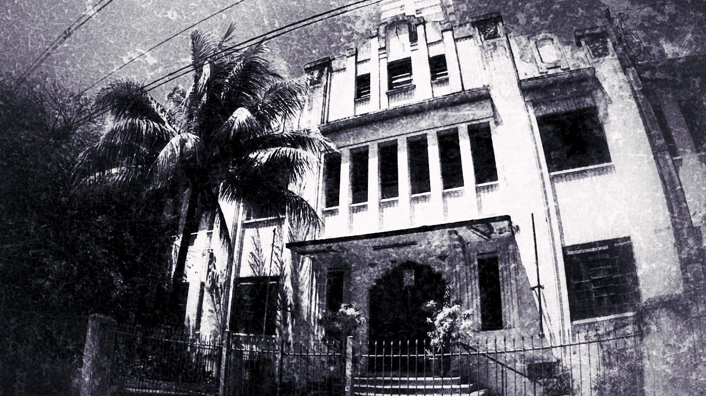
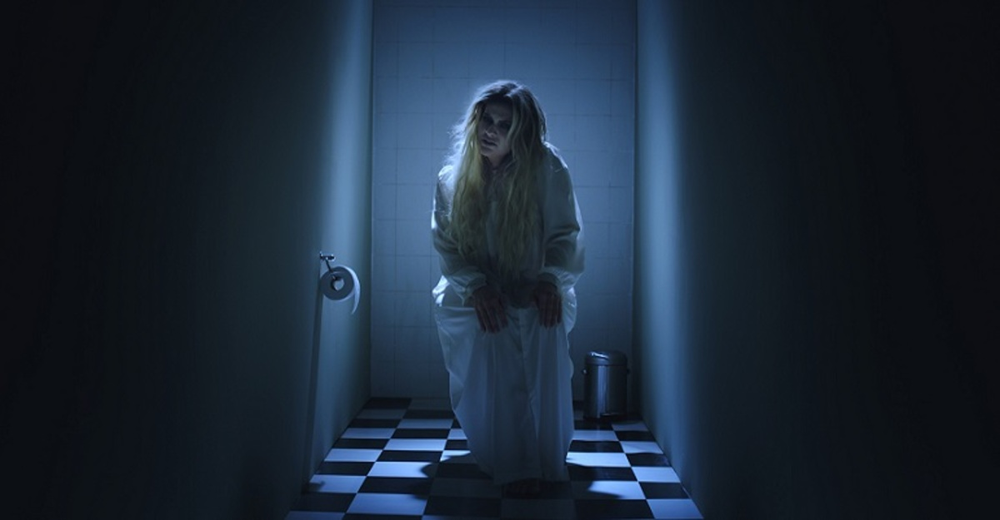
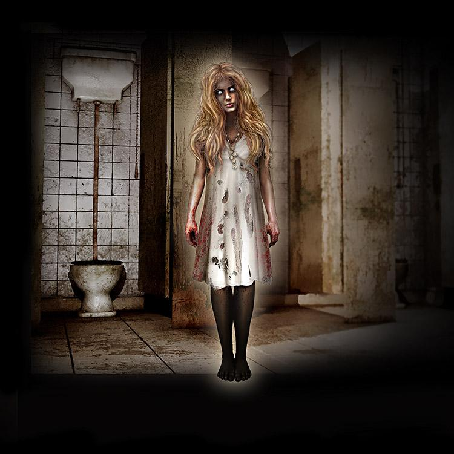
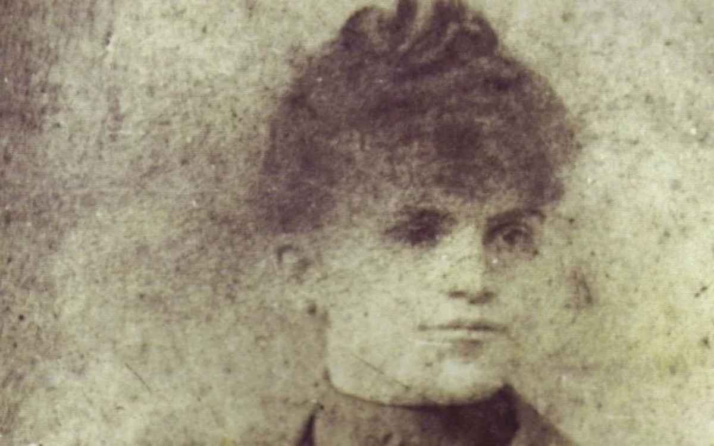

𝓠uem nunca ouviu falar da Loira do Banheiro? A história sempre se repete. O espírito de uma mulher loira surge nos banheiros femininos das escolas, pálida, com algodão no nariz e vestida de branco, como se tivesse acabado de sair do túmulo após um "ritual" feito para chamá-la. Ela costuma atacar alunas distraídas, principalmente aquelas que matam aula escondidas. Segundo o repórter Menezes, uma das versões da lenda começou em uma escola santista, o Colégio Canadá, uma das instituições mais antigas e conhecidas da cidade.


𝓔m uma manhã de primavera de 1944, o diretor Zacarias recebeu um chamado urgente. Algo grave havia ocorrido no banheiro feminino. Uma aluna de 15 anos chamada Luciana tirou a própria vida. A lenda conta que a jovem cortou os pulsos e, ao desmaiar, bateu a cabeça no vaso sanitário, e a pancada foi fatal. Os relatos estranhos começaram 1 mês após a morte. Uma colega de Luciana foi a primeira a ver o fantasma. Enquanto lavava as mãos, sentiu um arrepio e percebeu uma presença atrás de si. Ao se virar, viu Luciana, pálida, com algodão no nariz e vestindo a mesma roupa do enterro. Depois desse episódio, as aparições se tornaram frequentes. Ninguém mais ousava entrar no banheiro. Desde então, relatos de loiras em banheiros se multiplicaram por todo o país, sempre com detalhes parecidos, uma mulher pálida vestida de branco que assombra os estudantes.
